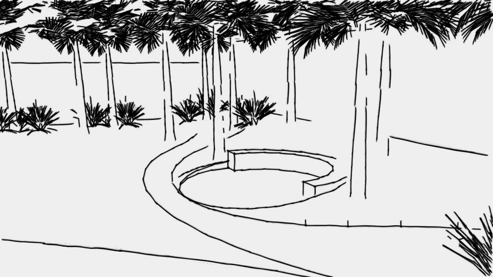

Paisagismo | Medianeira | Santa Maria
O jardim da área comum do edifício precisava de remodelação para se adequar ao novo trajeto
que levaria os automóveis ao estacionamento anexo que fora criado. Algumas palmeiras adultas e
um ambiente de estar foram relocados para permitir a passagem confortável dos carros, sem perigo
de raspões. Outras espécies foram relocadas para se adequar à insolação ideal necessária para a
saúde da planta, ou porque o local onde estava não permitia seu crescimento. Canteiros ociosos
na parte de recepção foram aproveitados, recebendo plantas de meia-sombra como bromélias e
palmeiras. Taludes foram cobertos com plantas herbáceas reptantes e o ambiente de estar
repaginado em novo local.
Santa Maria, RS.
